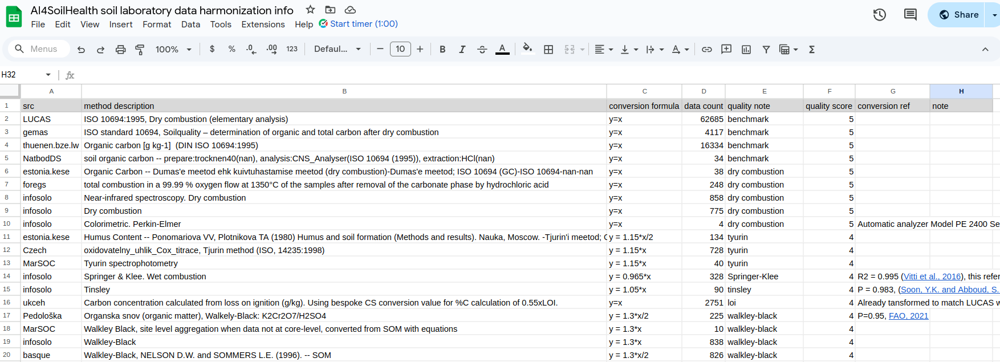

Code
input_path = '/mnt/lacus/ai4sh_data.harmo/raw_data'
output_path = 'data_v2'Last update 19 November 2024
This section outlines the detailed procedures used to import and bind all soil laboratory and site data. The major components of the process are shown in Figure 1, and are further explained in the corresponding subsections.

Point soil datasets are organized systematically to facilitate easy access and management. All raw data files are stored in a main folder named “raw data”. Within this folder, there are sub-folders for each country or region, named using the NUTS0 code (e.g., DE for Germany, UK for the United Kingdom, etc.).
The Google Sheet serves as the central platform for managing and documenting all soil data. It consists of multiple sheets, each serving specific functions:
Overview Sheet: High-level information including data sources, data availability across sources and properties, and the spatio-temporal distribution of the entire dataset.
Property Sheets: Each sheet is named after a soil property involved in the harmonization process, see the example of soc in Figure 2 sheet.

The code section includes Jupyter notebooks used for importing, quality control, harmonizing, and binding datasets into a single harmonized soil dataset. For the complete code, visit the GitHub repository.
The standardization of format (e.g., arrangement of rows/columns, naming conventions) is done individually for each dataset. Here’s an example using the GEMAS dataset.
First import necessary libraries and define input and output paths.
input_path = '/mnt/lacus/ai4sh_data.harmo/raw_data'
output_path = 'data_v2'Then load GEMAS data, check its format and content.
gema = gpd.read_file(f'{input_path}/EU/GEMAS/GEMAS.csv')
gema.head()| ID | COUNTRY | UHDICM | LHDICM | C_ID | TYPE | XCOO | YCOO | XLAEA | YLAEA | ... | As | Cd | Cu | Pb | Zn | C_tot | TOC | CEC | pH_CaCl2 | LOI | |
|---|---|---|---|---|---|---|---|---|---|---|---|---|---|---|---|---|---|---|---|---|---|
| 0 | 3001 | GER | 0 | 20 | 39 | Ap | 10.6667 | 52.4167 | 4366358.988 | 3256570.511 | ... | 1.554 | 0.212 | 3.47 | 14.91 | 19.2 | 1.36 | 1.3 | 9.3 | 6.05 | 3.67 |
| 1 | 3002 | SKA | 0 | 20 | 20 | Ap | 19.608 | 48.5683 | 5028057.752 | 2874475.41 | ... | 2.907 | 0.1599 | 4.94 | 20.38 | 50 | 2.09 | 2 | 11.1 | 4.9 | 8.12 |
| 2 | 3003 | EST | 0 | 20 | 9 | Ap | 22.5333 | 58.58 | 5046996.613 | 4006167.894 | ... | 1.882 | 0.1781 | 6.49 | 10.59 | 44.1 | 2.86 | 2.8 | 13.9 | 6.2 | 7.33 |
| 3 | 3004 | LIT | 0 | 20 | 9 | Ap | 24.9375 | 55.4631 | 5258480.127 | 3693116.32 | ... | 1.277 | 0.1404 | 5.22 | 7.67 | 19.4 | 1.79 | 1.8 | 15.6 | 6.81 | 5.66 |
| 4 | 3005 | NOR | 0 | 20 | 9 | Ap | 25.0675 | 70.5008 | 4884643.708 | 5324544.679 | ... | 0.597 | 0.358 | 6.81 | 6.99 | 32.4 | 10.4 | 11 | 24.7 | 4.48 | 22.82 |
5 rows × 23 columns
When converting GEMAS dataset to standard format, a temporary DataFrame is created to store the harmonized version of the GEMAS dataset. The soil property data is systematically organized into three components for each property available in the GEMAS dataset: 1. measured values; 2. measurement methods; 3. units.
temp = pd.DataFrame()
temp['ph.cacl2'] = gema['pH_CaCl2'] # unit info is not necessary for pH, therefore not recorded
temp['ph.cacl2_method'] = '0.01 M CaCl2'
temp['clay'] = gema['clay']
temp['silt'] = gema['silt']
temp = temp[['clay','silt']].apply(pd.to_numeric)
temp['sand'] = 100-temp['clay']-temp['silt']
temp['clay_unit'] = '%'
temp['sand_unit'] = '%'
temp['silt_unit'] = '%'
temp['clay_method'] = '<2 μm, DIN-EN 725-5 (04/2007) / ISO 13320 (10/2009) bylaser diffractometry.'
temp['sand_method'] = '20-2000 μm, DIN-EN 725-5 (04/2007) / ISO 13320 (10/2009) bylaser diffractometry.'
temp['silt_method'] = '2-20 μm, DIN-EN 725-5 (04/2007) / ISO 13320 (10/2009) bylaser diffractometry.'
temp['soc'] = gema['TOC']
temp['soc_unit'] = '%'
temp['soc_method'] = 'ISO standard 10694, Soilquality – determination of organic and total carbon after dry combustion'
temp['cec'] = gema['CEC'] # meq/100g = cmol/kg
temp['cec_unit'] = 'meq+/100 g'
temp['cec_method'] = 'silver-thiourea method'
temp['lc_survey'] = gema['TYPE']
temp.loc[temp['lc_survey']=='Gr','lc_survey'] = 'permanent grassland'
temp.loc[temp['lc_survey']=='Ap','lc_survey'] = 'arable land'Another key component is meta information, which contains key details such as the sampling location, time, depth, NUTS0 region, reference information (to identify the data source), and unique identifiers (used within each data source to distinguish individual measurements).
temp['lat'] = gema['YCOO'] # coordinates
temp['lon'] = gema['XCOO']
temp['time'] = 2008 # time, GEMAS soil survey is conducted in 2008
temp['hzn_top'] = gema['UHDICM'] # top and bottom depth of the surveyed soil layers
temp['hzn_btm'] = gema['LHDICM']
temp['ref'] = 'gemas' # reference column
temp['id'] = gema['ID'] # id used for each "ref"
# Map country codes to NUTS0
country_to_nuts0 = {
'GER': 'DE', 'SKA': 'SK', 'EST': 'EE', 'LIT': 'LT', 'NOR': 'NO',
'PTG': 'PT', 'POL': 'PL', 'SWE': 'SE', 'DEN': 'DK', 'ITA': 'IT',
'FRA': 'FR', 'FIN': 'FI', 'UKR': 'UA', 'CRO': 'HR', 'HEL': 'EL',
'HUN': 'HU', 'SPA': 'ES', 'CYP': 'CY', 'BEL': 'BE', 'UNK': 'UK',
'LAV': 'LV', 'SIL': 'SI', 'BUL': 'BG', 'SRB': 'RS', 'CZR': 'CZ',
'BOS': 'BA', 'FOM': 'MK', 'AUS': 'AT', 'NEL': 'NL', 'SLO': 'SK',
'IRL': 'IE', 'MON': 'ME', 'LUX': 'LU'
}
temp['nuts0'] = gema['COUNTRY']
temp['nuts0'] = gema['COUNTRY'].map(country_to_nuts0)Before saving, the data is preliminarily cleaned and filtered using metadata to ensure all measurements have valid location, time, and depth information. Additionally, only measurements taken after the year 2000 are retained, aligning with the temporal scope of our modeling and mapping efforts.
print(f'{len(temp)} data in total')
na = temp['time'].isna().sum()
print(f'{na} data with no time info')
na = temp.loc[temp['time']<2000]
print(f'{len(na)} data sampled before year 2000')
if 'hzn_dep' in temp.columns:
na = temp['hzn_dep'].isna().sum()
else:
na = len(temp[temp['hzn_btm'].isna() | temp['hzn_top'].isna()])
print(f'{na} data with no depth info')
na = len(temp[temp['lat'].isna() | temp['lon'].isna()])
print(f'{na} data with no coordinate info')
if 'hzn_dep' in temp.columns:
temp = temp.dropna(subset=['time','hzn_dep','lat','lon'])
else:
temp = temp.dropna(subset=['time','hzn_btm','hzn_top','lat','lon'])
temp = temp.loc[temp['time']>=2000]
print(f'{len(temp)} data left in total after filtering')4132 data in total
0 data with no time info
0 data sampled before year 2000
0 data with no depth info
0 data with no coordinate info
4132 data left in total after filteringFinally, ensure that the data is saved securely in the correct folder.
# Create folder if it does not exist
if not os.path.exists(output_path):
os.makedirs(output_path)
temp.to_parquet(f'{output_path}/gemas.showcase_harmonized_l1.pq')
print(temp.shape)(4132, 24)Once all raw datasets are harmonized into a standard format, they will be merged into a single, unified dataset for further checks and harmonization.
The standardized datasets are saved using the naming pattern {raw dataset name}_harmonized_l1.pq, with which we could easily parse all the standardized datasets and then merge them together.
data_path = 'data_v2' # define path of operation
# parse the paths to all standarized datasets
def find_soil_dataset(directory):
listt = []
for dirpath,_,filenames in os.walk(directory):
for f in filenames:
if 'harmonized_l1.pq' in f:
listt.append(os.path.abspath(os.path.join(dirpath, f)))
return listt
path_list = find_soil_dataset(data_path)
data_list = []
# read in all standarized datasets and merge
for ip in path_list:
temp = pd.read_parquet(ip) #, dtype=dtype_dict
print('Dataset: ', ip.split('/')[-1].split('_')[0], 'with ', len(temp.columns), ' data records.')
data_list.append(temp)
print()
data = pd.concat(data_list)
# unify the data format in each column
meta_cols = ['id', 'lat', 'lon', 'time', 'hzn_top', 'hzn_btm', 'ref', 'nuts0'] # columns to indicate meta information
prop_cols = ['soc', 'carbonates', 'total.n', 'ph.h2o', 'ph.cacl2', 'bulk.density.tot', 'bulk.density.fe',
'clay', 'silt', 'sand', 'extractable.p', 'extractable.k','cec','ec','coarse.mass','coarse.vol'] # columns to indicate property values
unit_cols = [i+'_unit' for i in prop_cols] # columns to indicate the unit information for each property
mtod_cols = [i+'_method' for i in prop_cols] # columns to indicate the method used for each measurements
num_cols = ['lat', 'lon', 'time', 'hzn_top', 'hzn_btm'] + prop_cols
for col in num_cols:
data[col] = pd.to_numeric(data[col], errors='coerce')
str_cols = ['id'] + unit_cols + mtod_cols
for col in str_cols:
data[col] = data[col].astype(str)
# show some example rows
sampled_rows = (
data[['ref','id']+prop_cols+unit_cols+mtod_cols].groupby('ref')
.apply(lambda x: x.sample(n=1)) # Sample one row per 'ref' group
.sample(n=5, random_state=42) # Randomly choose 5 rows from the sampled groups
.reset_index(drop=True) # Reset index for a clean DataFrame
)
sampled_rowsDataset: gemas.showcase with 24 data records.
--------------------------------------------------------------------------- KeyError Traceback (most recent call last) File ~/micromamba/envs/geoenv/lib/python3.13/site-packages/pandas/core/indexes/base.py:3812, in Index.get_loc(self, key) 3811 try: -> 3812 return self._engine.get_loc(casted_key) 3813 except KeyError as err: File pandas/_libs/index.pyx:167, in pandas._libs.index.IndexEngine.get_loc() File pandas/_libs/index.pyx:196, in pandas._libs.index.IndexEngine.get_loc() File pandas/_libs/hashtable_class_helper.pxi:7088, in pandas._libs.hashtable.PyObjectHashTable.get_item() File pandas/_libs/hashtable_class_helper.pxi:7096, in pandas._libs.hashtable.PyObjectHashTable.get_item() KeyError: 'carbonates' The above exception was the direct cause of the following exception: KeyError Traceback (most recent call last) Cell In[8], line 33 31 num_cols = ['lat', 'lon', 'time', 'hzn_top', 'hzn_btm'] + prop_cols 32 for col in num_cols: ---> 33 data[col] = pd.to_numeric(data[col], errors='coerce') 35 str_cols = ['id'] + unit_cols + mtod_cols 36 for col in str_cols: File ~/micromamba/envs/geoenv/lib/python3.13/site-packages/pandas/core/frame.py:4107, in DataFrame.__getitem__(self, key) 4105 if self.columns.nlevels > 1: 4106 return self._getitem_multilevel(key) -> 4107 indexer = self.columns.get_loc(key) 4108 if is_integer(indexer): 4109 indexer = [indexer] File ~/micromamba/envs/geoenv/lib/python3.13/site-packages/pandas/core/indexes/base.py:3819, in Index.get_loc(self, key) 3814 if isinstance(casted_key, slice) or ( 3815 isinstance(casted_key, abc.Iterable) 3816 and any(isinstance(x, slice) for x in casted_key) 3817 ): 3818 raise InvalidIndexError(key) -> 3819 raise KeyError(key) from err 3820 except TypeError: 3821 # If we have a listlike key, _check_indexing_error will raise 3822 # InvalidIndexError. Otherwise we fall through and re-raise 3823 # the TypeError. 3824 self._check_indexing_error(key) KeyError: 'carbonates'
Check once again on the validity of meta columns, if not, drop the corresponding rows.
# time info
print('Check time info')
old_time = data.loc[data['time']<2000]
print(f'{len(old_time)} data sampled before year 2000')
na_time = data.loc[data['time'].isna()]
print(f'{len(na_time)} data with invalid temporal information')
print()
# coordinate
print('Check coordinates info')
len_ori = len(data)
inf_condition = data['lat'] > 75
zero_condition = data['lat'] <= 0
nan_condition = (data['lat'].isna() | data['lon'].isna())
combined_condition = nan_condition | inf_condition | zero_condition
print(f"{nan_condition.sum()} rows with nan coordinates, from {data.loc[nan_condition, 'ref'].unique()}")
print(f"{inf_condition.sum()} rows with inf coordinates, from {data.loc[inf_condition, 'ref'].unique()}")
print(f"{zero_condition.sum()} rows with zero coordinates, from \n{data.loc[zero_condition, 'ref'].unique()}")
data = data.loc[~combined_condition].reset_index(drop=True)
print(f"Original length was {len_ori}, cleaned length is {len(data)}")
print()
# depth
print('Check depth info')
data.loc[data['hzn_dep'].isna(),'hzn_dep'] = (data.loc[data['hzn_dep'].isna(),'hzn_top']+data.loc[data['hzn_dep'].isna(),'hzn_btm'])/2 # derive mean depth info from bottom and top depth of layers
data = data.drop(columns = ['hzn_top','hzn_btm'])
na_depth = data.loc[data['hzn_dep'].isna()]
print(f'{len(na_depth)} data with invalid depth information')
print()Check time info
0 data sampled before year 2000
0 data with invalid temporal information
Check coordinates info
1 rows with nan coordinates, from ['gemas']
0 rows with inf coordinates, from []
0 rows with zero coordinates, from
[]
Original length was 4132, cleaned length is 4131
Check depth info--------------------------------------------------------------------------- KeyError Traceback (most recent call last) File ~/micromamba/envs/geoenv/lib/python3.13/site-packages/pandas/core/indexes/base.py:3812, in Index.get_loc(self, key) 3811 try: -> 3812 return self._engine.get_loc(casted_key) 3813 except KeyError as err: File pandas/_libs/index.pyx:167, in pandas._libs.index.IndexEngine.get_loc() File pandas/_libs/index.pyx:196, in pandas._libs.index.IndexEngine.get_loc() File pandas/_libs/hashtable_class_helper.pxi:7088, in pandas._libs.hashtable.PyObjectHashTable.get_item() File pandas/_libs/hashtable_class_helper.pxi:7096, in pandas._libs.hashtable.PyObjectHashTable.get_item() KeyError: 'hzn_dep' The above exception was the direct cause of the following exception: KeyError Traceback (most recent call last) Cell In[9], line 31 29 # depth 30 print('Check depth info') ---> 31 data.loc[data['hzn_dep'].isna(),'hzn_dep'] = (data.loc[data['hzn_dep'].isna(),'hzn_top']+data.loc[data['hzn_dep'].isna(),'hzn_btm'])/2 # derive mean depth info from bottom and top depth of layers 32 data = data.drop(columns = ['hzn_top','hzn_btm']) 33 na_depth = data.loc[data['hzn_dep'].isna()] File ~/micromamba/envs/geoenv/lib/python3.13/site-packages/pandas/core/frame.py:4107, in DataFrame.__getitem__(self, key) 4105 if self.columns.nlevels > 1: 4106 return self._getitem_multilevel(key) -> 4107 indexer = self.columns.get_loc(key) 4108 if is_integer(indexer): 4109 indexer = [indexer] File ~/micromamba/envs/geoenv/lib/python3.13/site-packages/pandas/core/indexes/base.py:3819, in Index.get_loc(self, key) 3814 if isinstance(casted_key, slice) or ( 3815 isinstance(casted_key, abc.Iterable) 3816 and any(isinstance(x, slice) for x in casted_key) 3817 ): 3818 raise InvalidIndexError(key) -> 3819 raise KeyError(key) from err 3820 except TypeError: 3821 # If we have a listlike key, _check_indexing_error will raise 3822 # InvalidIndexError. Otherwise we fall through and re-raise 3823 # the TypeError. 3824 self._check_indexing_error(key) KeyError: 'hzn_dep'
Drop duplicates and save the data.
data_cleaned = data.drop_duplicates()
duplicates = data.duplicated(keep=False)
duplicated_df = data[duplicates]
dup_src = duplicated_df['ref'].unique()
print(f'{len(duplicated_df)} duplicated rows, from {dup_src} datasets')
print(f'left {len(data_cleaned)} rows from origianl {len(data)} rows')
data.to_parquet(f'{data_path}/soil.showcase_meta.cleaned_l2.pq')0 duplicated rows, from [] datasets
left 4131 rows from origianl 4131 rowsQuality control refers to the harmonization of measured values, involving the cleaning of erroneous and imcomplete data, conversion of data to a consistent unit, removing measurements that are neither comparable nor convertible to benchmark, and applying conversion formulas to transform convertible soil data to align with the bemchmark. The harmonization is performed property by property, using LUCAS as the benchmark. Below is an example of harmonizing soc data.
# Initialize the paths, variables and read in the merged dataset
prop = 'soc'
unit = f'{prop}_unit'
mtod = f'{prop}_method'
data_path = 'data_v2'
data = pd.read_parquet(f'{data_path}/soil.showcase_meta.cleaned_l2.pq')
data.loc[:, :] = data.replace('None','nan')
none_exists = (data == 'None').any().any() # make sure all the invalid values are represented by 'nan'
sampled_rows = (
data[['ref', 'id', 'nuts0', prop, unit, mtod]].groupby('ref')
.apply(lambda x: x.sample(n=1)) # Sample one row per 'ref' group
.sample(n=5, random_state=42) # Randomly choose 5 rows from the sampled groups
.reset_index(drop=True) # Reset index for a clean DataFrame
)
sampled_rows--------------------------------------------------------------------------- ValueError Traceback (most recent call last) Cell In[11], line 14 8 data.loc[:, :] = data.replace('None','nan') 9 none_exists = (data == 'None').any().any() # make sure all the invalid values are represented by 'nan' 11 sampled_rows = ( 12 data[['ref', 'id', 'nuts0', prop, unit, mtod]].groupby('ref') 13 .apply(lambda x: x.sample(n=1)) # Sample one row per 'ref' group ---> 14 .sample(n=5, random_state=42) # Randomly choose 5 rows from the sampled groups 15 .reset_index(drop=True) # Reset index for a clean DataFrame 16 ) 18 sampled_rows File ~/micromamba/envs/geoenv/lib/python3.13/site-packages/pandas/core/generic.py:6137, in NDFrame.sample(self, n, frac, replace, weights, random_state, axis, ignore_index) 6134 if weights is not None: 6135 weights = sample.preprocess_weights(self, weights, axis) -> 6137 sampled_indices = sample.sample(obj_len, size, replace, weights, rs) 6138 result = self.take(sampled_indices, axis=axis) 6140 if ignore_index: File ~/micromamba/envs/geoenv/lib/python3.13/site-packages/pandas/core/sample.py:152, in sample(obj_len, size, replace, weights, random_state) 149 else: 150 raise ValueError("Invalid weights: weights sum to zero") --> 152 return random_state.choice(obj_len, size=size, replace=replace, p=weights).astype( 153 np.intp, copy=False 154 ) File numpy/random/mtrand.pyx:1020, in numpy.random.mtrand.RandomState.choice() ValueError: Cannot take a larger sample than population when 'replace=False'
Firstly, we standardize all measurements to g/kg for soc values.
# check all the possible units of soc measurements we have
print(f'{prop} units: {data[unit].unique()}')
# convert % to g/kg
data.loc[data[unit].isin(['%', '% KA']),prop] = data.loc[data[unit].isin(['%', '% KA']),prop]*10 # % -> g/kg
# now check which data source has unit = 'nan'
mask_unit = (data[unit]=='nan') & (data[prop].notna())
nan_ref = data.loc[mask_unit,'ref'].unique().tolist()
print(f'nan unit data from {nan_ref}')
# let's check the distribution of the nan unit data, compare them with LUCAS, to see what's the unit of them
plot_subplots_histogram(data, prop, 'ref', filt = nan_ref+['LUCAS'], value_range=None, bins=30)
print('Based on the range of values, it appears that the unit for the nan unit data is %.')
mask_unit = (data[unit]=='nan') & (data[prop].notna())
data.loc[mask_unit,prop] = data.loc[mask_unit,prop]*10 # transform to g/kgsoc units: ['%']
nan unit data from []
Based on the range of values, it appears that the unit for the nan unit data is %.Then we use the property harmonization information from Harmonization sheet to assign quality score and convert the convertable/comparable values to be comparable to LUCAS soc values.
# read in the soc harmonization sheet
key_file = '/mnt/lacus/ai4sh_data.harmo/gaia-319808-913d36b5fca4.json'
url = 'https://docs.google.com/spreadsheets/d/1J652XU_VWmbm1uLmeywlF6kfe7fUD5aJrfAIK97th1E/edit#gid=1254448729'
gsheet = GoogleSheet(key_file, url)
mdf = gsheet.soc
# Use this function to convert all convertible measurements and assign quality scores to each measurement.
# After the conversion, a new quality score column 'soc_qa' is added.
dff = conversion(data, mdf, prop,dataset_colum_name="ref")
print(dff)
# sampled_rows = (
# dff[['ref', 'id', 'time','hzn_dep', f'{prop}_original', prop, f'{prop}_qa',mtod,'conversion formula', 'conversion ref',unit]].groupby('ref')
# .apply(lambda x: x.sample(n=1)) # Sample one row per 'ref' group
# .sample(n=5, random_state=42) # Randomly choose 5 rows from the sampled groups
# .reset_index(drop=True) # Reset index for a clean DataFrame
# )
# sampled_rowsMissing in registry for soc: {('gemas', 'ISO standard 10694, Soilquality – determination of organic and total carbon after dry combustion')}
NoneOnce the conversion is complete, the data is cleaned based on its possible range. For soc, values must be positive and less than 1000.
# Define the property column, assuming it's in a variable `prop`
lower_limit, upper_limit = 0, 1000
# Remove negative values (below lower limit) and print summary
nan_counts_lower = dff[dff[prop]< lower_limit].groupby('ref').size()
print("\nNaN dff count per 'ref' from negative values:")
for ref, count in nan_counts_lower.items():
print(ref, count)
# Remove values above the upper limit and print summary
nan_counts_upper = dff[dff[prop]> upper_limit].groupby('ref').size()
print("\nNaN dff count per 'ref' from values exceeding upper limit:")
for ref, count in nan_counts_upper.items():
print(ref, count)
dff.loc[dff[prop] < lower_limit, prop] = np.nan
dff.loc[dff[prop] > upper_limit, prop] = np.nan
plot_subplots_histogram(dff, prop, 'ref', filt=None, value_range=[lower_limit, upper_limit], bins=40)--------------------------------------------------------------------------- TypeError Traceback (most recent call last) Cell In[14], line 5 2 lower_limit, upper_limit = 0, 1000 4 # Remove negative values (below lower limit) and print summary ----> 5 nan_counts_lower = dff[dff[prop]< lower_limit].groupby('ref').size() 6 print("\nNaN dff count per 'ref' from negative values:") 7 for ref, count in nan_counts_lower.items(): TypeError: 'NoneType' object is not subscriptable
Measurements with a quality score below 2 (indicating they are not comparable to LUCAS) are set to NaN. Finally, all unnecessary columns are dropped, keeping only the quality score column.
dff.loc[dff[f'{prop}_qa']<=2,prop] = np.nan
dff = dff.drop(columns=['src','conversion formula', 'conversion ref',f'{prop}_original',unit,mtod])
dff.to_parquet(f'{data_path}/soil.showcase_soc.cleaned.o1_l2.pq')
plot_spatial_distribution(dff, title = 'harmonized soc')--------------------------------------------------------------------------- AttributeError Traceback (most recent call last) Cell In[15], line 1 ----> 1 dff.loc[dff[f'{prop}_qa']<=2,prop] = np.nan 2 dff = dff.drop(columns=['src','conversion formula', 'conversion ref',f'{prop}_original',unit,mtod]) 3 dff.to_parquet(f'{data_path}/soil.showcase_soc.cleaned.o1_l2.pq') AttributeError: 'NoneType' object has no attribute 'loc'
The harmonized soil point dataset is presented in a tabular format. Each row in the table represents a sample collected from a specific depth and location in a given year. The table is organized into columns that store two main types of information about each sample:
oc_iso.10694.1995.wpct): Soil organic carbon.sand.tot_iso.11277.2020.wpct): Sand content.silt.tot_iso.11277.2020.wpct): Silt content.clay.tot_iso.11277.2020.wpct): Clay content.bd.core_iso.11272.2017.g.cm3): Bulk density of total bulk sample.oc_iso.10694.1995.mg.cm3): Organic carbon density.ph.h2o_iso.10390.2021.index): pH in H2O.n.tot_iso.13878.1998.wpct): Total nitrogen.caco3_iso.10693.1995.wpct): Carbonate content.ph.cacl2_iso.10390.2021.index): pH in CaCl2.p.ext_iso.11263.1994.mg.kg): Extractable phosphorus.k.ext_usda.nrcs.mg.kg): Extractable potassium.cec.ext_iso.11260.1994.cmol.kg): Cation exchange capacity.ec_iso.11265.1994.ms.m): Electrical conductivity.